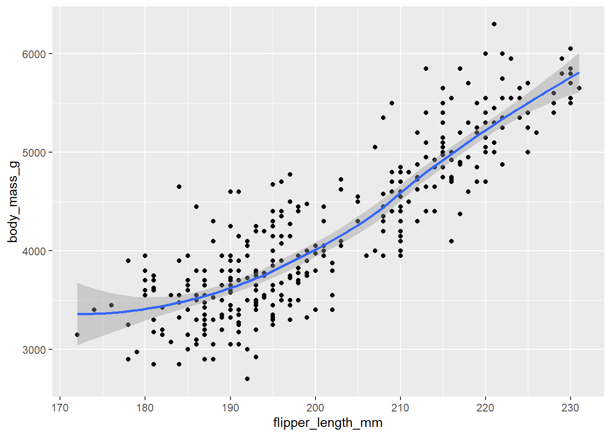

library(palmerpenguins)
library(tidyverse)
library(ggthemes)Penguins Analysis
ggplot(
data = penguins,
mapping = aes(x = flipper_length_mm, y = body_mass_g)
)
Our canvas has gained some structure. We’ve designated where flipper lengths will be shown along the x-axis and where body masses will be shown along the y-axis. However, our penguins are still absent from the plot. This is because we haven’t instructed our code on how to visually represent the observations from our data frame on the plot.
ggplot(
data = penguins,
mapping = aes(x = flipper_length_mm, y = body_mass_g)
) +
geom_point()
We’ve created what resembles a scatterplot now. While it’s not exactly what we envisioned for our final plot, it’s a step forward. With this scatterplot, we can begin tackling the question that sparked our investigation.
ggplot(
data = penguins,
mapping = aes(x = flipper_length_mm, y = body_mass_g, color = species)
) +
geom_point()
Now here we see when a categorical variable is linked to an aesthetic like color in ggplot2, each unique level of the variable gets a unique color, and ggplot2 automatically creates a legend to explain these colors.
Now, let’s add another layer: a smooth curve that shows the relationship between body mass and flipper length. Before moving forward, think about how we can integrate this into our current plot code.
ggplot(
data = penguins,
mapping = aes(x = flipper_length_mm, y = body_mass_g, color = species)
) +
geom_point() +
geom_smooth(method = "lm")
We’ve successfully added lines, but our plot differs from the one in Section 1.2.2. That plot had only one line for the entire dataset, whereas ours has separate lines for each penguin species.
In ggplot2, when aesthetic mappings are defined globally, they’re applied to all subsequent layers. However, each geom function can also accept local mappings, allowing for additional aesthetics to be applied. Since we want points colored by species but don’t want separate lines for each species, we should specify color = species only for geom_point().
ggplot(
data = penguins,
mapping = aes(x = flipper_length_mm, y = body_mass_g)
) +
geom_point(mapping = aes(color = species)) +
geom_smooth(method = "lm")We’re getting closer to our ultimate goal, but there are a few tweaks needed. Firstly, we should use different shapes for each penguin species instead of relying solely on colors. This is important because not everyone perceives colors the same way, especially those with color vision differences. By mapping species to the shape aesthetic in addition to color, we ensure that our plot remains accessible and informative to all viewers.
ggplot(
data = penguins,
mapping = aes(x = flipper_length_mm, y = body_mass_g)
) +
geom_point(mapping = aes(color = species, shape = species)) +
geom_smooth(method = "lm")
To enhance our plot, we can use the labs() function to improve the labels. Some arguments like title and subtitle are self-explanatory, while others like x and y define the labels for the x-axis and y-axis respectively. We can also specify labels for the color and shape legends. Additionally, to ensure our color palette is colorblind-safe, we can use the scale_color_colorblind() function from the ggthemes package.
ggplot(
data = penguins,
mapping = aes(x = flipper_length_mm, y = body_mass_g)
) +
geom_point(aes(color = species, shape = species)) +
geom_smooth(method = "lm") +
labs(
title = "Body mass and flipper length",
subtitle = "Dimensions for Adelie, Chinstrap, and Gentoo Penguins",
x = "Flipper length (mm)", y = "Body mass (g)",
color = "Species", shape = "Species"
) +
scale_color_colorblind()
We’ve achieved our ultimate goal with a plot that matches our expectations perfectly!
Questions on Penguin Analysis
1. How many rows are in penguins? How many columns?
nrow(penguins)[1] 344ncol(penguins) [1] 82. What does the bill_depth_mm variable in the penguins data frame describe? Read the help for ?penguins to find out.
Answer = a number denoting bill depth (millimeters)
3. Make a scatterplot of bill_depth_mm vs. bill_length_mm. That is, make a scatterplot with bill_depth_mm on the y-axis and bill_length_mm on the x-axis. Describe the relationship between these two variables.
ggplot(data = penguins,
mapping = aes(x = bill_length_mm , y = bill_depth_mm))+
geom_point(mapping = aes(color = species, shape = species ))+
geom_smooth() +
labs(
title = "Bill length and Bill depth",
subtitle = "Relation of bill_length and bill_depth",
x = "bill_length (mm)", y = "bill_depth (mm)",
color = "species" ,shape = "species" )+
theme_light()4. What happens if you make a scatterplot of species vs. bill_depth_mm? What might be a better choice of geom?
ggplot(data = penguins,
mapping = aes(x = species , y = bill_depth_mm))+
geom_point()This will be a better choice of geom
ggplot(data = penguins,
mapping = aes(x = species , y = bill_depth_mm))+
geom_jitter(mapping = aes(color = species, shape = species)) +
labs(
title = "Species and Bill depth",
subtitle = "Bill depth bar chart according to species",
x = "Species", y = "Bill_depth_mm " )+
theme_bw() 5. Why does the following give an error and how would you fix it?
ggplot(data = penguins) +
geom_point()You will get an error because mapping argument is absent and aes function is also absent
ggplot(data = penguins,
mapping = aes(x = body_mass_g, y = flipper_length_mm))+
geom_point()
6. What does the na.rm argument do in geom_point()? What is the default value of the argument? Create a scatterplot where you successfully use this argument set to TRUE.
ggplot(na.rm = TRUE ,data = penguins,
mapping = aes(x = bill_length_mm , y = bill_depth_mm))+
geom_point(mapping = aes(color = species, shape = species))+
geom_smooth()7. Add the following caption to the plot you made in the previous exercise:
“Data come from the palmerpenguins package.” Hint: Take a look at the documentation for labs().
ggplot(na.rm = TRUE ,data = penguins,
mapping = aes(x = bill_length_mm , y = bill_depth_mm))+
geom_point(mapping = aes(color = species, shape = species))+
geom_smooth() +
labs(
caption = "Data come from the palmerpenguins package" )8. Recreate the following visualization. What aesthetic should bill_depth_mm be mapped to? And should it be mapped at the global level or at the geom level?
ggplot(na.rm = TRUE,
data = penguins,
mapping = aes(x = flipper_length_mm , y = body_mass_g))+
geom_point(aes(color = bill_depth_mm))+
geom_smooth() +
labs(
title = "Flipper length and Body mass",
subtitle = "Relation of flipper_length_mm and body_mass_g",
x = "flipper_length (mm)", y = "body_mass (g)",
color = "species" ,shape = "species")+
theme_light()9. Run this code in your head and predict what the output will look like. Then, run the code in R and check your predictions.
ggplot(
data = penguins,
mapping = aes(x = flipper_length_mm, y = body_mass_g, color = island)
) +
geom_point() +
geom_smooth(se = FALSE)
10. Will these two graphs look different? Why/why not?
ggplot(
data = penguins,
mapping = aes(x = flipper_length_mm, y = body_mass_g)
) +
geom_point() +
geom_smooth()
ggplot() +
geom_point(
data = penguins,
mapping = aes(x = flipper_length_mm, y = body_mass_g)
) +
geom_smooth(
data = penguins,
mapping = aes(x = flipper_length_mm, y = body_mass_g)
)